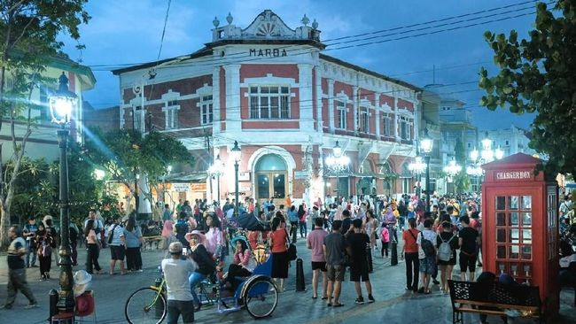
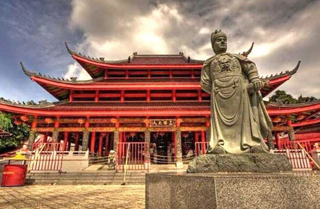

Bila Jakarta memiliki kawasan Kota Tua yang mengandung nilai sejarah yang penting, demikian juga dengan Semarang. Di ibu kota Provinsi Jateng ini terdapat sebuah kawasan serupa yang dikenal dengan Kota Lama.
Berada di kawasan utara kota, kawasan ini memiliki nilai historis yang tinggi terkait eksistensi Belanda di Indonesia. Di sini, wisatawan masih dapat menjumpai sejumlah bangunan bergaya klasik yang sedap dipandang mata serta suasananya yang tenang.
Salah satu bangunan cagar budaya yang masih berdiri di kawasan Kota Lama Semarang adalah Gereja Immanuel atau yang populer dengan sebutan Gereja Blenduk.
Dibangun pada 1753, gereja ini memiliki arsitektur neo klasik yang khas dan dipulas dengan warna putih. Pilar-pilar serta menara yang berdiri di bagian depan gereja, atapnya yang berdesain setengah bola dan berwarna merah bata, berikut taman asri di sekitarnya, menambah keanggunan gereja yang berada di bilangan Jalan Suprapto ini.

Di sebelah barat daya Kota Semarang, tepatnya di kawasan Simongan, terdapat sebuah bangunan penting yang bermakna sejarah dan budaya yang amat tinggi.
Bangunan unik tersebut didirikan sebagai penghormatan sekaligus untuk mengenang seorang laksamana besar kerajaan Tiongkok, yang sempat singgah di Semarang dalam ekspedisi damainya di Nusantara pada abad ke-15, yakni Sam Po Tay Djien alias Zeng He alias Cheng Ho.
Bernama Sam Po Kong, kompleks bangunan ini juga populer dengan nama Gedung Batu karena terletak di atas bukit dan adanya sebuah goa. Di kompleks ini juga terdapat sejumlah bangunan bergaya khas Tiongkok yang didominasi warna merah dan hijau.
Di salah satu bagian bangunan ini tampat relief unik, yang menggambarkan kisah perjalanan Sang Laksamana, kala mengarungi samudra luas, dan persinggahannya di Semarang.
Suasana Sam Poo Kong sangat kental dengan nuansa Tionghoa. Namun demikian pengunjung tempat ini sangat beragam, baik suku maupun kepercayaan mereka
Kelenteng Sam Poo Kong dapat dicapai dari Bandara Ahmad Yani, dengan taksi, dengan waktu tempuh sekitar 15 menit. Sedangkan bila dengan angkutan umum, wisatawan bisa menggunakan bus jurusan Mangkang-Terminal Terboyo.
Sebagai kota terbesar di Jawa Tengah, Semarang terhubung dengan sejumlah kota besar di Jawa dan Indonesia, baik dengan moda transportasi udara, darat, maupun laut. Untuk transportasi udara, hampir semua maskapai penerbangan nasional melayani penerbangan langsung ke Bandara Ahmad Yani, Semarang dari Jakarta mulai Garuda Indonesia, Lion Air, Batik Air, Sriwijaya Air, dan maskapai penerbangan lainnya.